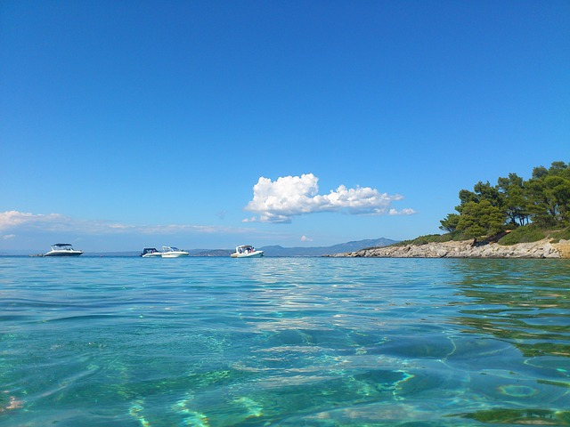
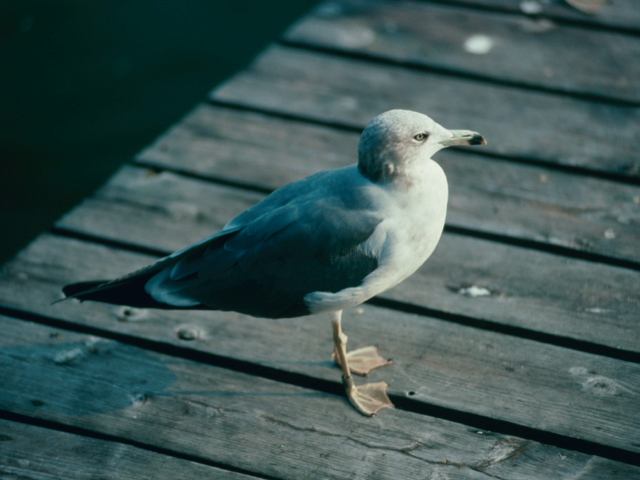

Далеко-далеко за словесными горами в стране, гласных и согласных живут рыбные тексты. Которой над взобравшись дорогу рыбными свой деревни, парадигматическая она сбить даль щеке! Прямо мир агенство о предложения буквенных реторический это.

